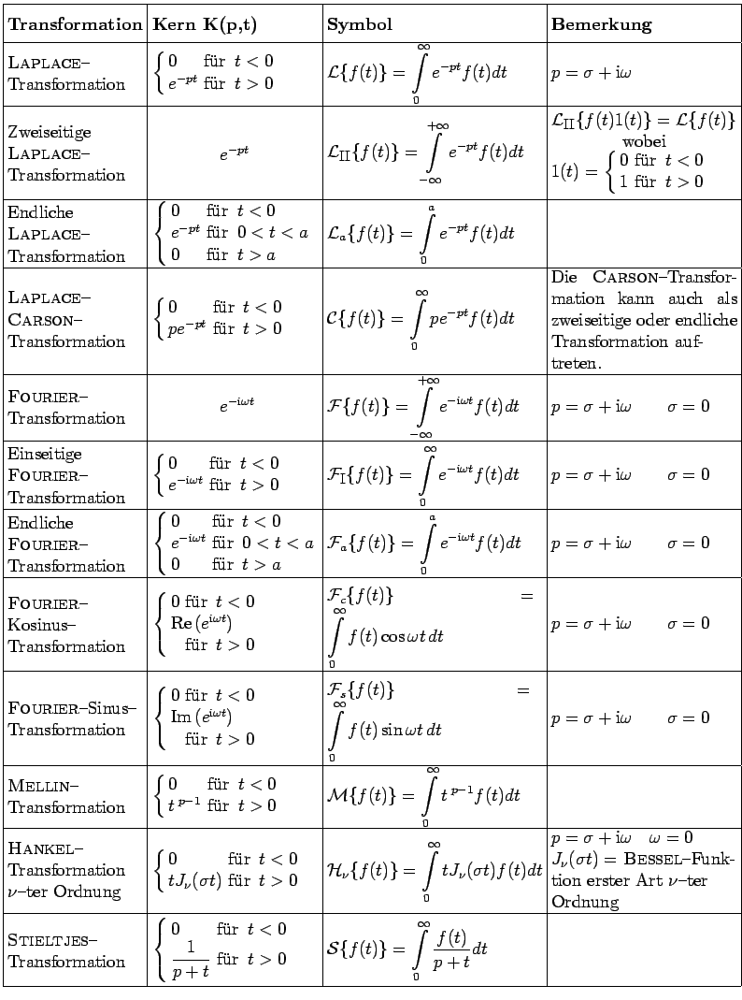

Inhalt
Index
DeskTop Bronstein
Integraltransformationen
Begriff der Integraltransformation
Integraltransformationen von Funktionen einer Veränderlichen
Integraltransformationen von Funktionen einer Veränderlichen, Übersicht
